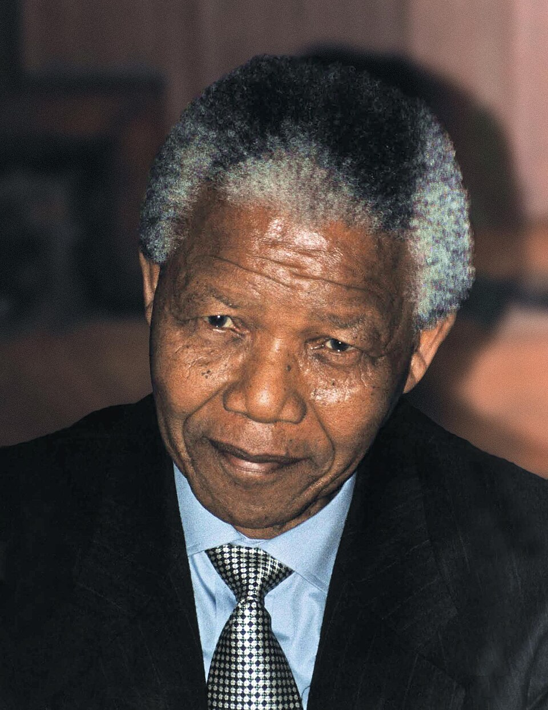

Mandela, libre después de veintisiete años: salió caminando y con el puño en alto
El líder Nelson Mandela franqueó a pie la puerta de la prisión Victor Verster, de la mano de su esposa Winnie, ante una multitud que lo esperaba desde el alba. Pidió seguir la lucha contra el apartheid, pero llamó a hacerla sin odio.

Poco después de las cuatro de la tarde, un hombre alto y erguido, de pelo cano y andar pausado, cruzó a pie el portón de la prisión Victor Verster, en las afueras de Ciudad del Cabo, llevando de la mano a su esposa Winnie y alzando el puño derecho al cielo. Era Nelson Mandela, y hacía veintisiete años que estaba preso. La multitud que aguardaba desde el amanecer estalló en un rugido; muchos de los que gritaban su nombre no habían nacido cuando lo encerraron y jamás habían visto su cara, porque en Sudáfrica estaba prohibido publicar su retrato. El preso más famoso del mundo volvía a ser, después de casi tres décadas, un hombre entre los hombres.
Mandela entró en la cárcel en 1962 siendo un abogado y dirigente combativo, y sale de ella convertido en el símbolo mundial de una causa. Su delito fue luchar contra el apartheid, el sistema con que una minoría blanca gobierna Sudáfrica separando por ley a las razas: bancos, playas, escuelas, barrios y hasta asientos de plaza distintos para negros y blancos, sin voto ni derechos para la mayoría de la población. Condenado a cadena perpetua, pasó dieciocho años picando piedra en la isla penal de Robben Island, frente a esta misma bahía, y desde su celda minúscula se transformó, sin proponérselo, en la conciencia incómoda de un país y en un reproche viviente para el mundo entero.
La puerta que hoy se abrió la empujaron muchas manos a la vez. Durante años, el mundo fue cerrándole el paso a Sudáfrica: sanciones, boicots, deportistas y artistas que se negaban a pisarla, una presión que ahogó su economía y aisló a su gobierno. Adentro, las protestas y la represión volvían al país cada vez más ingobernable. El nuevo presidente, Frederik de Klerk, leyó la hora: días atrás levantó la prohibición que pesaba sobre el Congreso Nacional Africano, el movimiento de Mandela, y anunció que lo liberaría. En los últimos años el propio preso ya negociaba en secreto con sus carceleros, convencido de que la salida no era la venganza de unos sobre otros, sino un país para todos.
Al caer la tarde, Mandela habló ante una multitud inmensa desde el balcón del municipio de Ciudad del Cabo, con una voz algo insegura por la falta de costumbre y unos anteojos prestados, porque los suyos habían quedado vaya a saber dónde. Se declaró «un humilde servidor» del pueblo, reafirmó que la lucha contra el apartheid debía continuar, pero tendió la mano al adversario y habló de una Sudáfrica libre y democrática para blancos y negros por igual. Quienes compartieron su cautiverio cuentan que salió de la cárcel sin rencor visible, repitiendo que un hombre que odia a sus carceleros sigue, en el fondo, siendo su prisionero. Esta noche, en los barrios negros, no se durmió: se bailó.
El camino que empieza hoy será más arduo que el que termina: falta desmontar leyes, repartir el voto, evitar que tanta injusticia acumulada desemboque en la venganza, y no todos, de un lado ni del otro, querrán soltar lo que tienen. Pero hay imágenes que valen por una época, y la de este hombre saliendo a pie y con el puño en alto tras veintisiete años es una de ellas. El año pasado, este diario contó cómo caía en Europa un muro que parecía eterno; hoy, en el extremo sur de África, empieza a caer otro, hecho no de hormigón sino de leyes, y quizá más difícil de demoler. La historia, que suele ir despacio, hoy dio un paso largo.